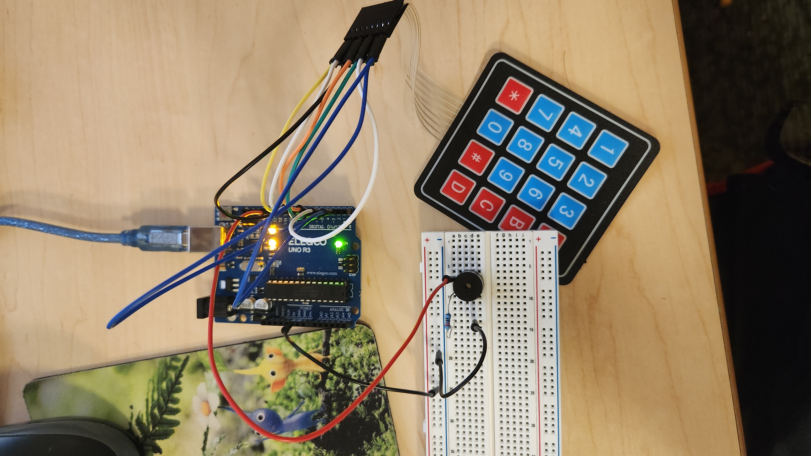
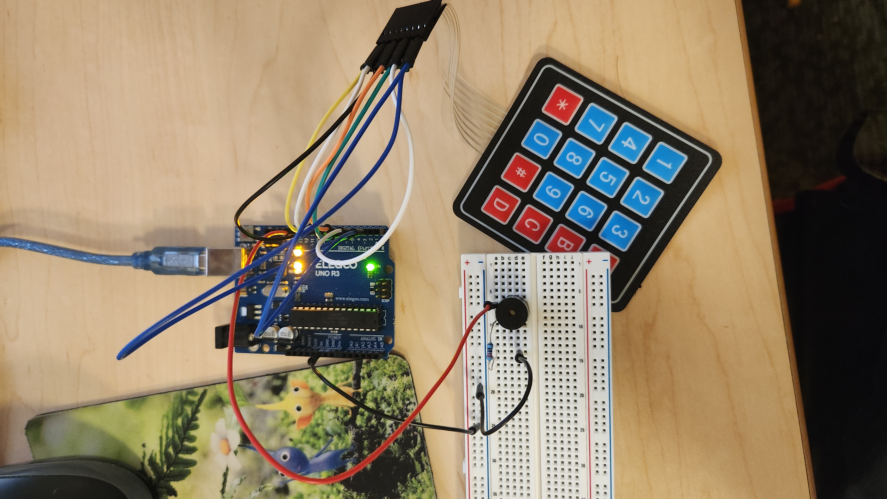
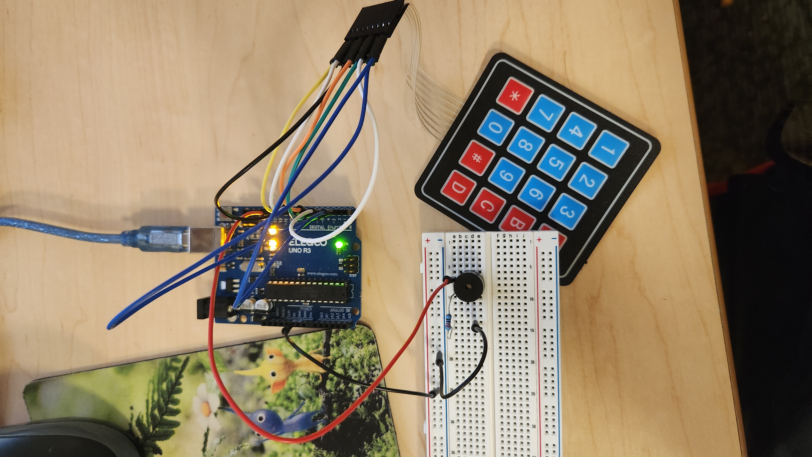

Here is all the documentation for assignment 4:

Each button on the keypad makes the passive buzzer plays a different note
I used a 220 ohm resistor because the buzzer datasheet said the current should be below 25 mA
Q1: Say you are using a servo motor you attach to pin 9.
In your loop() you have the following code:
for (int i=0, i<180, i++){servo.write(i); delay(100);}
Draw a graph with the X axis in seconds, for two seconds, and the y-axis the voltage at pin 9 with respect to ground.
Q2: Your input device is slightly broken, leading it to give us an erroneous reading 1% of the time. How can we address this?
//calibrates a max and min expected input. Hopefully 25 samples is enough, can be changed if not.
for (i=0; i < 25; i++){
read input
if input >max
max = input
if input < min
min = input
}
// if input is inside range, include it.
if input <= max || input >= min {
include in dataset
}
Q3: Our input device is slightly noisy, leading the measurement to randomly deviate from the true measurement up or down by 10%.
//adds the sum of ten inputs
for (i=0; i < 10; i++){
sum = input + sum
}
//divides sum by number summed to get average
avg = sum/10
include average of several readings instead of each individual reading.
Here is the code for assignment 3:
//TonePitch Library by Rodrigo Dornelles allows me to type note names rather than frequency values for the buzzer to output
#define TONE_USE_INT
#define TONE_PITCH 440
#include TonePitch.h
//Keypad library for recognizing keypad buttons
#include Keypad.h
//code taken from link on class slide (lastminuteengineers.com)
const byte ROWS = 4;
const byte COLS = 4;
byte rowPins[ROWS] = {9, 8, 7, 6};
byte colPins[COLS] = {5, 4, 3, 2};
char hexaKeys[ROWS][COLS] = {
{'1', '2', '3', 'A'},
{'4', '5', '6', 'B'},
{'7', '8', '9', 'C'},
{'*', '0', '#', 'D'}
};
Keypad customKeypad = Keypad(makeKeymap(hexaKeys), rowPins, colPins, ROWS, COLS);
void setup() {
//begin serial
Serial.begin(9600);
}
void loop() {
//variable that holds the output from the current key being pushed
char customKey = customKeypad.getKey();
//variable that holds the state of the keypad
// 0 = nothing is pushed, 1 = a button was pushed, 2 = a button was held, 3 = a button was released
int state = customKeypad.getState();
//determines whether a button is being pushed or held
//turns off buzzer if not
if(state != 0){
//determines what key is being pressed and plays the tone
switch(customKey){
case '1':
tone(12, NOTE_C4);
break;
case '4':
tone(12, NOTE_D4);
break;
case '7':
tone(12, NOTE_E4);
break;
case '*':
tone(12, NOTE_F4);
break;
case '2':
tone(12, NOTE_G4);
break;
case '5':
tone(12, NOTE_A4);
break;
case '8':
tone(12, NOTE_B4);
break;
case '0':
tone(12, NOTE_C5);
break;
case '3':
tone(12, NOTE_D5);
break;
case '6':
tone(12, NOTE_E5);
break;
case '9':
tone(12, NOTE_F6);
break;
case '#':
tone(12, NOTE_G6);
break;
case 'A':
tone(12, NOTE_A6);
break;
case 'B':
tone(12, NOTE_B6);
break;
case 'C':
tone(12, NOTE_C7);
break;
case 'D':
tone(12, NOTE_D7);
break;
}
}
else{
noTone(12);
}
//prints the state of the button on the monitor
Serial.println(state);
delay(2);
}